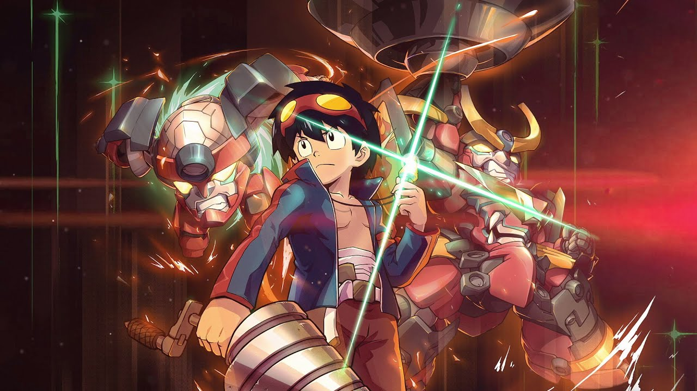
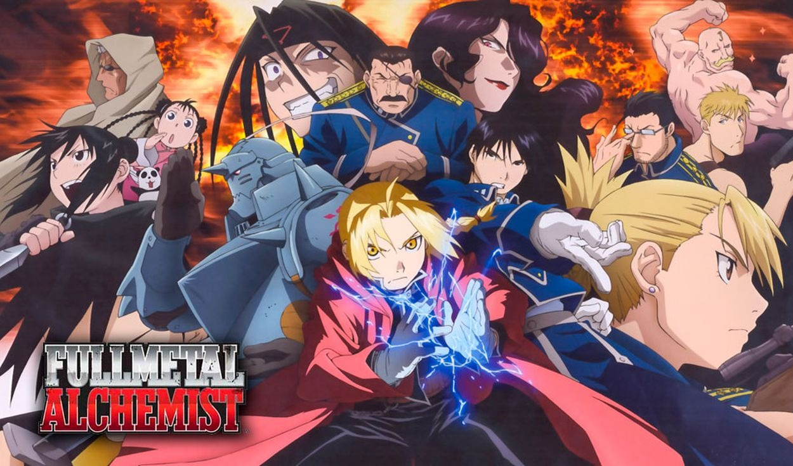

Robots gigantes, taladros y muchos colores...estos fueron los ingredientes para crear al anime perfecto. En una de las primeras exitosas historias del estudio de animación Trigger ya se marca un estilo único y bien definido de la estética que va a seguir caracterizando su trabajo hasta los cortos de star wars estrenados este año. Una historia de un futuro apocalíptico donde los humanos se ven obligados a vivir bajo tierra. Nuestros héroes Kamina y Simón encuentran la llave, o mejor dicho, el taladro que les permite perforar su techo y finalmente salir a la superficie donde van a encontrar muchas más aventuras, y peleas con robots gigantes, de las que esperaban. Una historia rápida, emocionante y que emociona. Peleas excelentemente animadas y robots poco convencionales pero que siguen viéndose genial, y que nunca, pero nunca, paran de transformarse. Si te gustan los animes donde el poder de pelea no para de escalar, Gurren Laggan te va a encantar. Sentate a ver los 26 capítulos que te van a dejar queriendo tener muchos taladros por todos lados.
Publicado el 14-10-21 por Tebi
En mi casa tenemos algunos rituales. Los sábados limpiamos, los domingos comemos pastas, una vez por semana salimos por un rico cafecito, una vez al año miramos Full Metal Alchemist: Brotherhood. En un mundo donde existe la alquimia, quienes la practican suelen ser contratados por el Estado para formar parte de la milicia, y son llamados por el resto como “perros del Estado”. Con el objetivo de conseguir los medios y fondos para recuperar sus cuerpos, dos jóvenes alquimistas se unen a la filas del Estado y terminan adentrándose en una enorme trama de corrupción y poder, sin perder nunca sus ideales. Con un puntaje de 9.16 y votado por 2,649,743 miembros, se mantiene hace varios años en el puesto número 1 de My Anime List, y por algo debe ser. Es que este anime tiene todo lo necesario para ser el mejor anime: una trama que atrapa, arcos narrativos interesantes, profundo desarrollo de personajes y todo acompañado con la animación del estudio Bones, que nunca defrauda. No hay capítulos relleno, no hay historias que queden inconclusas, todos los eventos aportan a la trama principal que se desenvuelve armoniosamente para entregarnos uno de los mejores finales de la historia del anime. Si tengo que elegir una de las razones por las cuales este anime está en mi top, es el rol central que tienen los sentimientos y el crecimiento de cada personaje. Arrancamos con dos chicos tristes y enojados queriendo recuperar sus cuerpos, y los acompañamos en un viaje lleno de risas, tristeza, amistades y enemigos. Sin que ellos lo supieran, se meten en una trama de engaños, complicidades y corrupción de la cual somos espectadores y nos desesperamos por desentrañar todo el misterio junto a los hermanos! Te encariñas con los personajes y queres que triunfen, y en el camino disfrutas con ellos, te moris de ternura por la debilidad de Alphonse con los gatos, te reís de los complejos que tiene Edward con su estatura y te ponés del lado de Winry cuando los reta. Son 64 episodios que se disfrutan y que vale la pena sentarse a ver, eso sí, con un paquete de pañuelos al lado.
Publicado el 14-10-21 por Tatooine